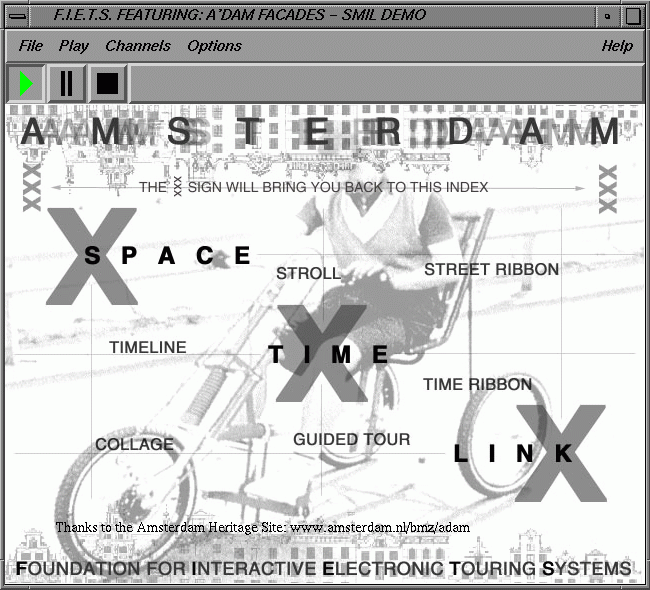

The buttons allow the user to play, pause or stop the document.
The commands here duplicate the Play (keyboard shortcut "p"), Pause (keyboard shortcut "P") and Stop (keyboard shortcut "s") buttons in the document window. There is an extra keyboard shortcut, spacebar, which does Play when stopped and toggles between Play and Pause otherwise.
This menu allows you to selectively disable and enable channels, also known as SMIL regions.
The Preferences command allows you to select the internet preferences for the system. Here you can set your internet connection speed, preferred language and such. This may cause alternative content to be played in some documents.
Dump scheduler data, if available, is a developer-only command to show what the player is doing.